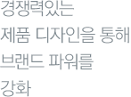
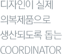
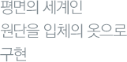
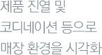

직무소개
각 분야별 상세한 직무소개
(RJP,Realistic Job Preview)를
통해, 입사지원시 지원자분에게
정확하고 실제적인 도움을
드리고자 합니다.
디자인
직무소개
고객 성향과 시장 동향을 정확하게 파악하여 마켓의 니즈를 충족시키는 제품을 디자인하는
직무입니다. 나아가 경쟁력있는 제품 디자인을 통해 브랜드 파워를 강화하고 이익의 극대화를
위해 기여합니다. 예술가적인 의견보다는 발전적이고 현실적인 아이디어를 제시하며,
조직구성원과의 원활한 커뮤니케이션을 이끌어 내는 능력이 중요한 직무입니다.
요구자질
- 디자인 전문지식/능력.
- 소재/컬러/봉제/패턴에 대한 지식.
- 패션 산업 전반 및 마켓 트렌드에 대한 이해.
- 의사소통능력.
직무내용
- 1.브랜드 시즌 컨셉을 도출합니다. 국내외 출장/시장조사 등을 이용한 지료수집 후
아이디어 회의를 통해 시즌 디자인맵을 작성합니다. - 2.수립된 시즌 컨셉에 따라 디자인 시안을 개발합니다. 드로잉/도식화 등을 이용한 시안제작 및 품평회를 위한 샘플 제품을 제작합니다.
- 3.품평회 진행과 사후 협의를 거쳐 시즌 메인 상품을 선정한 후, 매장매니저/우수고객 등을
초청하여 제품설명회를 실시합니다. 제품설명회를 통해 일부 상품군의 보완이 일어나며,
이후 상품생산을 의뢰합니다. 시즌중 시장상황을 주시하며 반응이 우수한 제품의
Repeat조치 및 단발성 상품의 기획이 이루어 집니다.
비전
디자이너라는 직무는 패션산업에서 가장 화려한 것처럼 인식되어 있습니다.
하지만 화려해 보이는 이면에는 많은 어려움과 시행착오가 숨어있는 것도 사실입니다.
디자이너로서의 감성은 기본이며 밤을 새워도 끄떡없는 강한 체력도 요구됩니다.
늘 새로운 것을 보여주어야 한다는 부담감도 존재합니다. 다양한 문화적 자극/새로운 경험 등
역량 강화를 위한 자기계발 및 재투자가 부단하게 이루어져야 합니다.
하지만 전문성이 인정되는 직종인 만큼, 폭넓은 직무의 경험보다는 Design Specialist로의
성장기회가 제공되며 능력에 기반한 보상이 이루어 진다는 점이 장점입니다.
세부직무
복종별 : 신사, 숙녀, 캐주얼, 아웃도어, 액세서리 디자인 등
아이템별 : 니트, 우븐, 소재, 컬러, 피혁, 신발, 용품 디자인 등
테크니컬디자인
직무소개
테크니컬 디자이너는 스타일 디자이너/ 패터너/ 생산팀과 같이 함께 일하면서 서로 간의
COORDINATOR 역할을 하고 디자인이 실제 의복제품으로 생산되도록 돕는 역할을 합니다.
구체적으로 디자인과 디자인 디테일을 분석하고 이에 정확한 스케치를 CAD로 그리고 수정하면서
작업지시서를 점검하고 의복이 어떻게 FIT 되는가를 패터너와 같이 확인하고 SPEC으로 구체화
시키며 생산공장과 정확한 의사소통을 통해 어떤 것 들이 디자인 팀에서 원하는지를 정확하게
확인하며 메인 제품 생산을 위한 샘플을 점검하고 CFM하는 업무를 진행하는 직무입니다.
요구자질
- 디자인 전문지식/능력.
- 패턴의 대한 기본 이해도.
- 일러스트, 포토샵.( 패턴 CAD 사용자 우대)
- 의사소통능력.(외국어 포함)
직무내용
- 1.디자인의 구현화 및 수치화
- 소재와 디자인에 맞는 도면 스케치.
- 소재와 디자인에 맞는 수치 제시.
- 소재와 디자인에 맞는 봉제방법 제시.
- 2.제품기준의 향상화
- FIT 과 패턴의 수치화.
- 봉제 사양의 표준화 작업.
- QC/QA 표준화 작업. ( QUALITY CONTROAL/APPROVAL)
- 3.제품의 생산화
- 1번/2번과 같은 기본 토대로 지시된 내용으로 제품이 메인 생산에 투입되기 전에 샘플을 대한 FIT과 디테일을 수정,검토하고 확정 하는 업무 진행.
- 생산업체와 정확한 의사소통을 통하여 원하는 디자인이제대로 된 상품으로, ON TIME에 나올 수 있도록 함.
- QUALITY 향상 및 디자인의 구현화에도 집중하지만 판매시기를 놓치지 않도록 디자인팀과 생산팀 사이에서 긴밀한 스케줄 관리/ 코디테이터 하는 업무능력 필요.
비전
국내 패션산업이 글로벌화 되면서 국내 생산보다는 해외 생산이 증가됨에 따라 기획 및 디자인을 하는 패션기업과 생산업체간의 거리가 멀어졌고, 이에 예전처럼 face to face 로 업무를 진행 함에 어려움이 생기면서 테크니컬 디자이너 라는 직무가 국내에도 알려지면서 점차적으로 세팅이 되고 있습니다. (해외 많은 글로벌 브랜드는 테크니컬 디자이너라는 직군의 시스템을 갖춰 업무 PROCESS 를 진행하고 있습니다)
한 명의 디자이너가 소재/칼라/ 디자인/ 제품제작을 모두 진행하던 과거의 업무 방식이
스타일 디자이너 /소재디자이너/ 칼라리스트/ 테크니컬 디자이너로 세분화 되고 있고 특히 테크니컬 디자이너는 디자인적 감각도 기본적으로 요구되지만 새로우면서 감각적인 Market Trend를 따라가며 창의성을 발휘 하기보다 수치화, 표준화된 제조지시서를 작성하고 이를 생산업체와 긴밀하게 작업을 이끌어 나간다는 측면에서 오랜 기간의 안정적이면서 전문성을 축적할 수 있습니다.
무엇보다 현재 국내 테크니컬디자이너 직군에 종사하고 있는 인원이 기업 수요에 미치지 못하고
있기 때문에 새로운 NEW 유망 직종으로 떠오르고 있습니다.
세부직무
복종별 : 신사/숙녀/아웃도어/캐주얼
패턴
직무소개
평면의 세계인 원단을 입체의 옷으로 구현하는 직무입니다.
MD와 디자이너가 방향을 정하고 심미적으로 풀어내는 직무라면, 패터너는 이를 실제적으로
구현해내는 일을 합니다. 단순히 입체를 구성하는 것에 그치는 것이 아닌, 변화하는 시장수요를
만족시키는 최고의 실루엣/착장감을 위한 연구가 병행됩니다.
요구자질
- 의류제작기법/설계에 대한 이해.
- 공간지각능력.
- 패션봉제에 대한 지식.
- 소재에 대한 지식.
- 생산공정/기술에 대한 이해. CAD기본지식.
직무내용
- 1.시장조사를 실시합니다. 자사브랜드/해외명품 브랜드/경쟁브랜드의 실루엣 및
사이즈 스펙에 대한 비교분석 데이터를 수집합니다. - 2.제품의 착용감/실루엣/활동성 등의 요인을 감안하여 아이템별 패턴을 제작합니다.
- 3.완성된 패턴샘플을 생산업체에 제조의뢰하며, 제조공정상 발생할 수 있는 Risk를 통제합니다.
해당 브랜드가 요구하는 결과물 수준을 위한 기술 지도 활동이 병행됩니다.
비전
막연하게 패터너를 기능 직무로 오해해선 안됩니다. 급변하는 글로벌 패션 트렌드를 읽을 수 있는
안목을 갖추어야 하며, 대중의 기호 변화에 능동적으로 대처할 수 있는 유연성을 필요로 합니다.
고객이 최고의 착장감을 느끼도록 꾸준한 R&D활동을 벌여야 하는 만큼 업무적인 압박도
존재하나, 해당 분야에서 전문성이 인정되는 만큼 전문 인재로 육성될 수 있는 장점이 있습니다.
세부직무
신사, 숙녀, 캐주얼, 아웃도어 패턴 등
VMD
직무소개
시즌 변화에 따라 기획된 제품들의 진열 및 코디네이션 등 다양한 방법을 통해 매장 환경을
시각적으로보여주는 업무입니다. 특히 최근에는 비주얼 포인트와 마네킹존에 따라
아이템의 성패가 좌우되기도 해 단순한 디스플레이에서 전략적 마케팅 Tool로써
진화하고 있습니다.
요구자질
- 패션산업 전반 및 Display에 대한 기본적인 이해.
- Display Trend분석/색채, 조형, 공간, 코디네이션 감각/신소재 개발.
- Interior Trend분석/신소재 개발/공간, 가구, 조명디자인에 대한 이해.
- 코디네이션감각, 공간구성력, 창의력.
- 포토샵, 일러스트 스킬.
직무내용
- 1.브랜드 컨셉에 따라 시각적으로 구체화하여 매장의 판매를 극대화 할 수 있도록 기획합니다.
- 2.VMD통일성을 위하여 브랜드 이미지를 고객에게 제공하는 제반 활동을 수행합니다.
- 3.Brand Concept에 따른 차별적인 판촉 제작물을 기획 및 디자인합니다.
비전
VMD는 상품기획을 통해 생산된 제품들을 시각적으로 표현하여 매출증대를 일으키는 것은 물론
브랜드 이미지를 표출하는 총체적인 연출자 입니다. 따라서 다양한 문화적 자극/새로운 경험 등
역량강화를 위한 자기계발이 부단히 이루어져야 하며 전문성을 가진 VMD Specialist로의
성장기회가 제공됩니다.
세부직무
복종별 : 신사, 숙녀, 캐주얼, 아웃도어, 액세서리 VMD 등